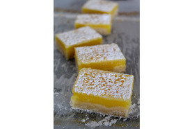

Nos trois desserts préférés
Tartes à la main maison - Cerise au fromage à la crème et citron au fromage à la crème
Dégustez nos délicieuses tartes à la main maison, avec des saveurs de cerise et de citron.

Tarte au fraises
Une tarte au fraises fraîche et savoureuse, parfaite pour l'été.

Carreaux au citron
Les barres au citron, avec leur croûte croustillante et leur garniture au citron acidulé, offrent une explosion de fraîcheur et de saveur en une seule bouchée.

Reduire vos dechets